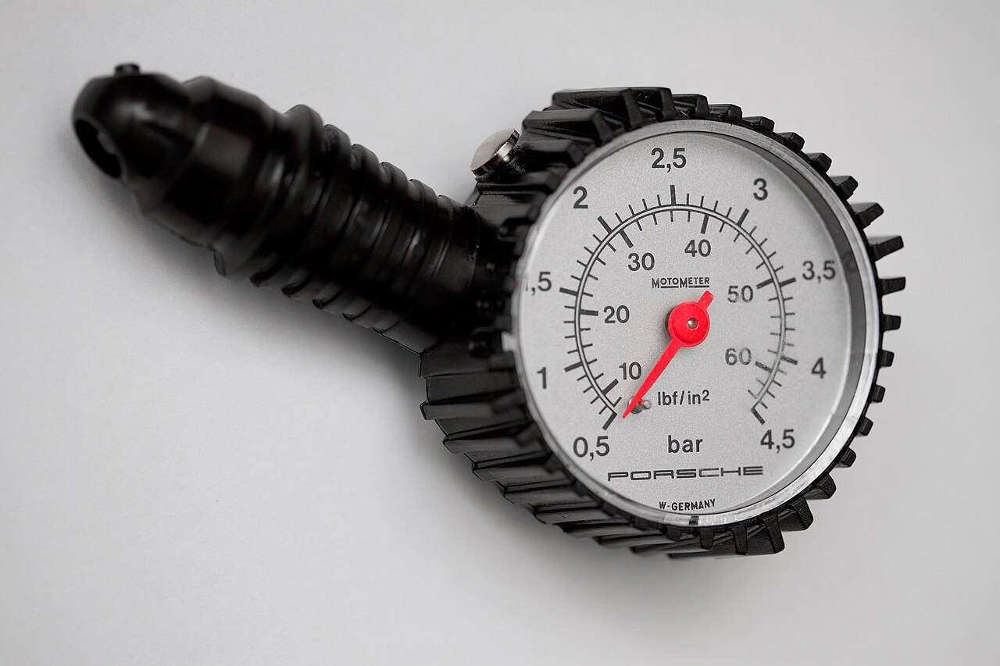

You're Checking Your Tire Pressure Wrong in Winter
Cold weather quietly lets the air out of your tires. Checking it the wrong way means driving on under-inflated tires all winter.

Photo: Antti, CC BY 2.0, via Wikimedia Commons
.jpg){kind=link}
Your tire pressure light came on with the first cold snap, you pumped the tires up at the gas station, and a week later the light is on again. Sound familiar? Winter tire pressure is the most quietly neglected thing on most cars. Cold air shrinks, pressure drops, and most drivers check their tires at the wrong time, against the wrong number — or not at all.
Why it's wrong
Tire pressure drops about 1 PSI for every 5°C the temperature falls. A tire set correctly on a mild October day can be seriously under-inflated by January — and under-inflated tires wear faster on the edges, handle worse, use more fuel, and stop longer on snow. The second mistake is where drivers look for the number: the figure printed on the tire sidewall is the tire's maximum pressure, not your car's recommended pressure. And checking pressure right after driving gives a false high reading, because driving warms the tires and raises the pressure. Check hot tires against the sidewall number and you'll think everything is fine while you're actually running soft.
The right way
- Find the right number on the driver's door jamb. The sticker on the door frame (or in the owner's manual) lists your car's recommended pressure — usually in the low 30s PSI for a sedan. That's the number, not the sidewall maximum.
- Check cold, before driving. Tires should sit for at least three hours, or be driven less than a kilometre, before you check. Morning, before you leave, is the honest reading.
- Use your own gauge. Gas station gauges get knocked around and drift. A decent pocket gauge costs a few dollars and lives in your glove box. Digital ones are easiest to read in the dark.
- Check all four — plus the spare if you carry one. A flat spare is a nasty surprise at the worst moment.
- Check every two weeks in winter. Temperature swings keep moving the pressure. Make it a habit: every second fuel stop, or every other Sunday morning.
- Don't trust the dashboard light alone. The tire pressure warning usually only comes on when pressure is already well below the recommended level. By the time it lights up, you've been driving under-inflated for a while.
The rundown
Door jamb number, cold tires, your own gauge, every two weeks. That's it. Five minutes in the driveway saves you tread wear, fuel, and stopping distance — and in winter, stopping distance is everything. If you're unsure about the right pressure for your car, check your owner's manual.
← Back to the winter tires guide
Watch: Do Tires Need to be Inflated Differently in Cold Weather? - FYF Episode 19
🛞 Try the calculator
See what your tires will read on a colder morning — the cold tire pressure calculator works it out in seconds.